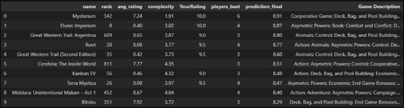
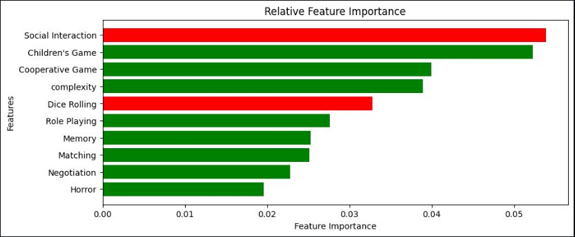

Click here to access the related GitHub repository
Click here to access the related GitHub repositoryIntroduction
The board gaming hobby is incredibly rich. Thousands of games, a myriad of styles and mechanics, very different levels of complexity, incredibly creative ideas, designs and themes from their creators... The board gaming community is also very active and united, always looking to give feedback on recently-published games, create content, guides and reviews to help other players enjoy the games or join the hobby and giving time and energy to manage resources to document, support or even develop online versions of the games. I was always a board game fan, from weekend afternoons to playing with family, Wednesdays at my grandmother's playing with her and my cousins or later on, more social games with friends in high school and university. I got introduced more recently to the "serious" part of the hobby, where the games are more complex, last longer (a few hours) and require proper brain investment. Although no two games are the same and there are so many different ingenious mechanics designed by the authors to create a engaging experience, it seemed to me there would be some traits and aspects of games that I appreciate more than others and that would motivate me to play another game or try a new one.
Although no two games are the same and there are so many different ingenious mechanics, it seemed to me there would be some traits and aspects of games that I appreciate more than others.
Project
After spending time on the number one board games website BoardGameGeek and its vast resources to look at list of games, compare games I had already played, browse through others... I decided I would try to see if I can find the similarities that make it so I enjoy the games I enjoy and potentially find new games I should try based on some of those "similarities". The idea is to develop a machine learning model using data describing aspects of board games (theme, category, complexity, mechanics, desginers, etc.), feed my own subjective reviews of the games I've played (both liked and disliked) on a scale of 1 to 10, and then train, test and refine a recommendation model for myself. The challenges are to determine what are the actual features we are going to use, what kind of model and how well it would perform given the fact that the target variable would be my own subjective rating and also that I have only played and reviewed an admittedly small proportion of the whole board games catalogue.
Results
Outcome - Most recommended games
We can see that several of the top recommended games are actual games I have played and highly rates, such as Mysterium, Dune: Imperium or Root. But many of those top recommendations are also games I don't know, and some I have heard of that I could be interested in.
Relative feature importance
Plotting the relative feature importance chart displays the main features used in training and shows that the ones that seem to impact my rating are the fact it is a Children's game or not, having a preference for those that are not, since indeed I do prefer adult games. Surprisingly, horror, fighting and role playing seem to have an positive influence on the rating given by the model while I don't think I particularly give any attention to these. Finally, the "Tracks" trait does feature as one of the top 10 most impactful and positive features which is indeed one the traits I do enjoy the most about games.
The project goal is about capturing and trying to objectify as much as possible differences in levels of difficulty between releases.
SHAP analysis of some specific results
Plotting the SHAP analysis graphs helps to understand why certain games get such or such rating and what impacts the most the final rating.
- A board game I know I don't like: UNO
- A 'good' known board game for me: Ark Nova
- A recommended popular game unknown to me: Lisboa
Conclusion
This project has been a tentative at a recommender system to give myself some recommendations of games I would enjoy based on traits such as game complexity, mechanics and categories. The main obstacle to a reliable prediction and model building is that the target metric, my own rating, is subjective and some games having a certain theme or mechanic could be rated high in some cases and low in others because of other factors, some of them where discarded in this project due to complexity of analysis or incomplete data (e.g. designer, artist, publisher...). External factors, such as mood, people I played with, how I overall did at the game (playing well or badly) could have an impact on my subjective rating but obviously cannot be captured my the moddel. Finally, the small sample size of game with the target feature present (~110 games) compared to the overall list of games (~90k) means the data used for training of this unsupervised model is likely to cause underfitting when training (and testing) the model.
The main obstacle to a reliable prediction and model building is that the target metric, my own rating, is subjective.
Edit
Since I first worked on this project (in mid 2024), I have learned new skills and methodologies to apply to building models such as this one. I have also played more games since then so I have more data to use to build my recommender system. This warrants an update in the coming months...